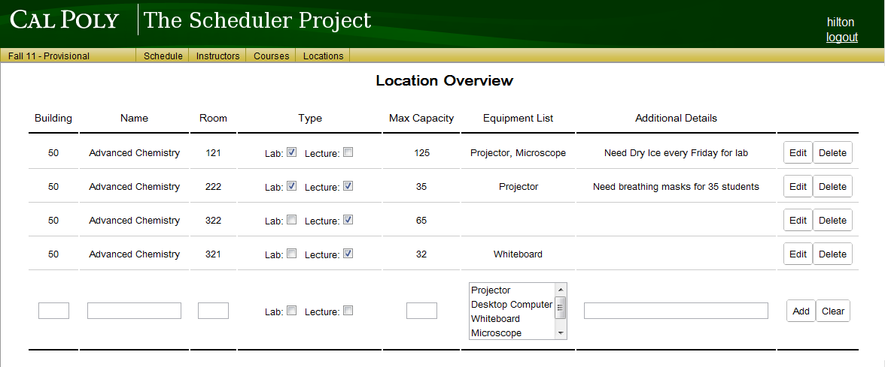
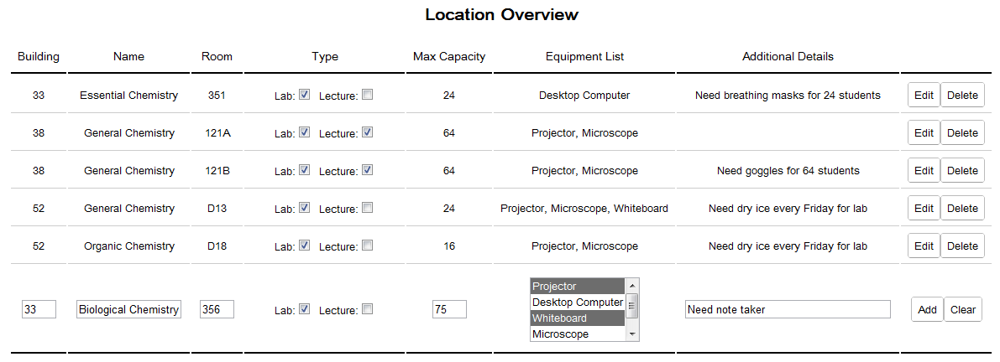

Once an administrator clicks on the Instructors button on the top menu, or clicks on the Instructors Add/Remove link on the home page, they are greeted with the instructor overview screen.
Figure 2.4.1.1: The main instructor list
The Instructor Overview list displays a list of all instructors saved for the department.
The user may add an instructor by entering the instructor's information into the spaces on the bottom row of the list. An example is shown in Figure 2.4.1.2. Once the information is entered, the user must click on the Add button to save the new instructor to the list.
The user may edit any instructor by selecting the Edit button next to that instructor. This selection brings up the Edit mode for that instructor.
The user may delete any instructor by selecting the Delete button next to that instructor. This selection brings up the Delete Instructor Confirmation screen.
What inputs are allowed in the text field(s) under each column are defined below:
Instructor Name will accept any letter, number, or punctuation.
ID will accept any letter or number, is caps-insensitive, and will default to all lower case.
WTU will accept numbers only.
Office will accept a number, then a dash, then a number, only.
A new instructor's information is entered into the text boxes on the bottom row of the instructor overview list. Once the information is entered, the user must click on the Add button to save the new instructor to the list. If the user does not want the information that has been entered to be saved, the user may navigate away from the courses page without pressing Add, or the user may select Clear to clear all values from the row.

Figure 2.4.1.2: Filling in a new instructor's information
Clicking on the Edit button next to an instructor will cause that instructor's row to extend to a second row as seen in Figure 2.4.1.3.

Figure 2.4.1.3: Edit an instructor's information
Any information about the instructor, other than the ID, can be edited from this view. Additionally, the extension row provides buttons to navigate to other screens that allow the user to adjust the instructor's Course, Time, and Distance preferences.
Once the user is satisfied with their edits, the user must select the Accept button to save their changes to the instructor. Otherwise, the user's changes can be undone by selecting the Cancel button.
Clicking on the Delete button next to an instructor will cause a confirmation view to appear like in Figure 2.4.1.4.

Figure 2.4.1.4: Confirmation for deleting an instructor
For added certainty in the delete confirmation view, the prompt includes the instructor's user ID in addition to the instructor's name. In order to confirm the deletion of the stated instructor, the user must select the Yes button. Otherwise, the No button will cancel the deletion attempt. Upon selecting either button, the screen will return back to the Instructor Overview. If deletion was confirmed, the deleted instructor will no longer be in the list.
Once an administrator clicks on the Courses button on the top menu, or clicks on the Courses Add/Remove link on the home page, they are greeted with the course overview screen.

Figure 2.4.2.1: The main course list
The Course Overview list displays a list of all courses saved for the department.
The user may add a course by entering the course's information into the spaces on the bottom row of the list. An example is shown in Figure 2.4.2.2. Once the information is entered, the user must click on the Add button to save the new course to the list.
The user may edit any course by selecting the Edit button next to that course. This selection brings up the Edit mode for that course.
The user may delete any course by selecting the Delete button next to that course. This selection brings up the Delete Course Confirmation screen.
What inputs are allowed in the text field(s) under each column are defined below:
Course Name will accept any letter, number, or punctuation.
Catalog Number will accept numbers only.
Department will accept letters only, is case-insensitive, and will default to all upper case.
WTU will accept numbers only.
STU will accept numbers only.
# of Sections will accept numbers only.
Course Type is a drop-down that will allow the user to select LEC for Lecture, LAB for Laboratory, or SEM for Seminar.
Max Enrollment will accept numbers only.
Lab will accept case-insensitive letters defaulting to upper case, and then numbers.
A new course's information is entered into the text boxes on the bottom row of the course overview list. Once the information is entered, the user must click on the Add button to save the new course to the list. If the user does not want the information that has been entered to be saved, the user may navigate away from the courses page without pressing Add, or the user may select Clear to clear all values from the row.

Figure 2.4.2.2: Filling in a new course's information
Clicking on the Edit button next to a course will cause that course's row's cells to become editable as seen in Figure 2.4.2.3.

Figure 2.4.2.3: Edit a course's information
Any information about the course can be edited from this view. Once the user is satisfied with their edits, the user must select the Accept button to save their changes to the course. Otherwise, the user's changes can be undone by selecting the Cancel button.
Clicking on the Delete button next to a course will cause a confirmation view to appear like in Figure 2.4.2.4.

Figure 2.4.2.4: Confirmation for deleting a course
For added certainty in the delete confirmation view, the prompt includes the course's department and catalog number in addition to the course's name. In order to confirm the deletion of the stated course, the user must select the Yes button. Otherwise, the No button will cancel the deletion attempt. Upon selecting either button, the screen will return back to the Course Overview. If deletion was confirmed, the deleted course will no longer be in the list.
Once an administrator clicks on the Locations button on the top menu, or clicks on the Locations Add/Remove link on the home page, they are greeted with the location overview screen.

Figure 2.4.3.1: The main location list
The Location Overview list displays a list of all Locations saved for the department.
The user may add a location by entering the location's information into the spaces on the bottom row of the list. An example is shown in Figure 2.4.3.2. Once the information is entered, the user must click on the Add button to save the new location to the list.
The user may edit any location by selecting the Edit button next to that location. This selection brings up the Edit mode for that location.
The user may delete any location by selecting the Delete button next to that location. This selection brings up the Delete Location Confirmation screen.
What inputs are allowed in the text field(s) under each column are defined below:
Building will accept numbers only.
Name will accept letters, numbers, and punctuation.
Room will accept numbers only.
Type contains two checkboxes for whether the room is a lab or lecture room, or both.
Max Capacity will accept numbers only.
Equipment List is a drop-down list allowing the user to select multiple options. The options are Projector, Desktop Computer, Whiteboard, Microscope, and Colored Markers.
Additional Details will accept letters, numbers, and punctuation.
A new location's information is entered into the text boxes and multi-select list on the bottom row of the location overview list. Once the information is entered, the user must click on the Add button to save the new location to the list. If the user does not want the information that has been entered to be saved, the user may navigate away from the courses page without pressing Add, or the user may select Clear to clear all values from the row.

Figure 2.4.3.2: Filling in a new location's information
Clicking on the Edit button next to a location will cause that location's row's cells to become editable as seen in Figure 2.4.3.3.

Figure 2.4.3.3: Edit a location's information
Any information about the location can be edited from this view. Once the user is satisfied with their edits, the user must select the Accept button to save their changes to the location. Otherwise, the user's changes can be undone by selecting the Cancel button.
Clicking on the Delete button next to a location will cause a confirmation view to appear like in Figure 2.4.3.4.

Figure 2.4.3.4: Confirmation for deleting a location
For added certainty in the delete confirmation view, the prompt includes the location's building and room number in addition to the location's name. In order to confirm the deletion of the stated location, the user must select the Yes button. Otherwise, the No button will cancel the deletion attempt. Upon selecting either button, the screen will return back to the Location Overview. If deletion was confirmed, the deleted location will no longer be in the list.